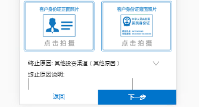

js新增方法，choseIndex(),如果终止原因内容包含"其他原因",就会显示终止原因说明，但是终止原因说明一直卡在手机下方，怎么往下拉都没有办法。
解决办法,在choseIndex()方法内加刷新方法
setTimeout(function(){
myScroll.refresh();
},250);
因为js是有任务栈的，使用setTimeout是为了将方法压入栈底，最后执行，这样可以确保javascript可以得到更新后的属性。